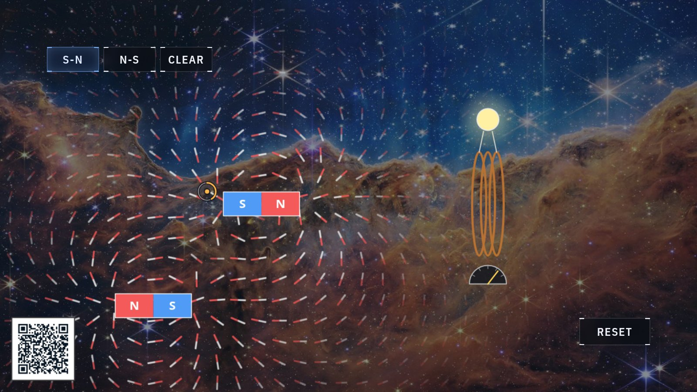

Magnetism · induction
Magnets
A magnet fills the space around it with a field of its own, and when that field sweeps through a coil of wire, electricity flows. Here you make that happen with one hand.

At the display
- Pinch empty space to drop a bar magnet, choosing S-N or N-S from the palette to set which way it points. The compass needles around it snap to the new field at once.
- Drag a magnet toward the coil and the bulb lights while the bar is moving. The faster you sweep, the brighter it glows; hold still and it goes dark, however strong the magnet.
- Watch the meter under the coil as you push the magnet in and pull it back out. The needle swings one way going in and the other way coming out, and the numbers beneath it report the induced voltage and current in real millivolts and milliamps, computed for this coil from the field your magnets make.
What's really happening
Every magnet has two ends, a north pole and a south pole. The screen scatters hundreds of tiny compass needles around your magnets, and each needle turns to line up with the field passing through its spot. Follow the red tips from needle to needle and they trace closed loops: out of the north face, around through the air, back in at the south face, and straight on through the metal to complete the circuit. Cutting a magnet in half gives two smaller magnets, each with both poles again; as far as anyone has ever measured, the poles come only in pairs.
The coil is where the field becomes electricity. In 1831 Michael Faraday discovered that a current appears in a loop of wire only while the magnetic field threading it is changing. Physicists call the amount of field through the loop the flux, and the induced push on the charges grows with how fast that flux changes. A magnet parked beside the coil induces nothing at all. A magnet in motion drives the bulb, and the display computes the same flux a real coil would feel, frame by frame, from the exact field of your bars. The readout keeps the numbers honest: a hand-swept bar past three turns of wire really does make only a few millivolts, which is why practical generator coils wind hundreds of turns.
The meter underneath adds the direction of the story. On the way in, the current flows one way around the coil; on the way out, it reverses. The induced current always opposes the change that created it, a rule named after Heinrich Lenz, and that opposition is why a real generator takes muscle, steam or falling water to keep turning.